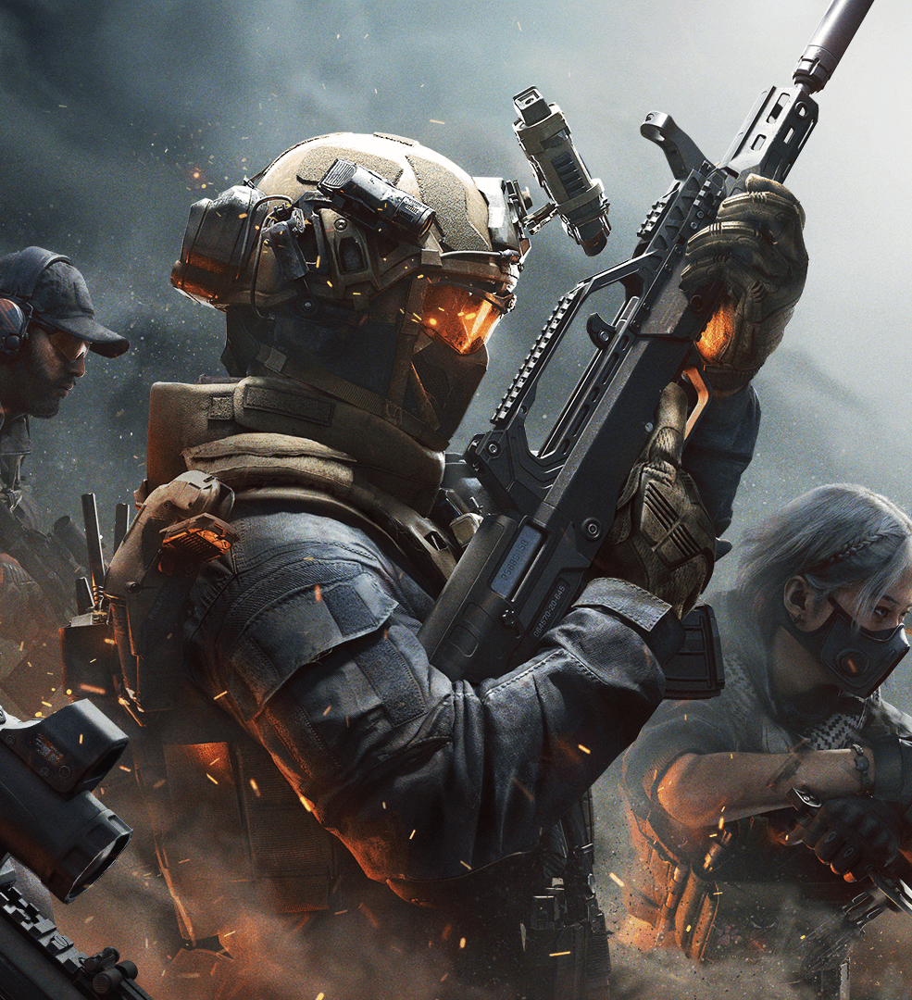

Delta Force es un shooter táctico en primera persona, gratuito, desarrollado
por Team Jade —una división de TiMi Studio Group— y publicado bajo el sello
Level Infinite de Tencent. Retoma el nombre de la clásica saga militar y la
reconstruye con tecnología moderna para PC, consolas (PS5, Xbox Series X|S)
y dispositivos móviles, con progreso compartido entre plataformas.

Jugabilidad
El título se sostiene en dos pilares principales.Warfare
enfrenta a decenas de jugadores por bando en combates a gran escala, con
vehículos terrestres, marítimos y aéreos sobre mapas abiertos.
Operations es la propuesta de extracción: escuadras se
infiltran en zonas hostiles para recuperar botín valioso y deben salir con
vida antes de que termine el tiempo, enfrentando tanto a otros jugadores
como a enemigos controlados por IA. El juego incluye además una campaña
ambientada en la histórica operación Black Hawk Down de 1993, junto a una
línea narrativa futurista situada en 2035.
Mapas de Operaciones
Estos son los escenarios disponibles en el modo de extracción, de la T8 asia atras: